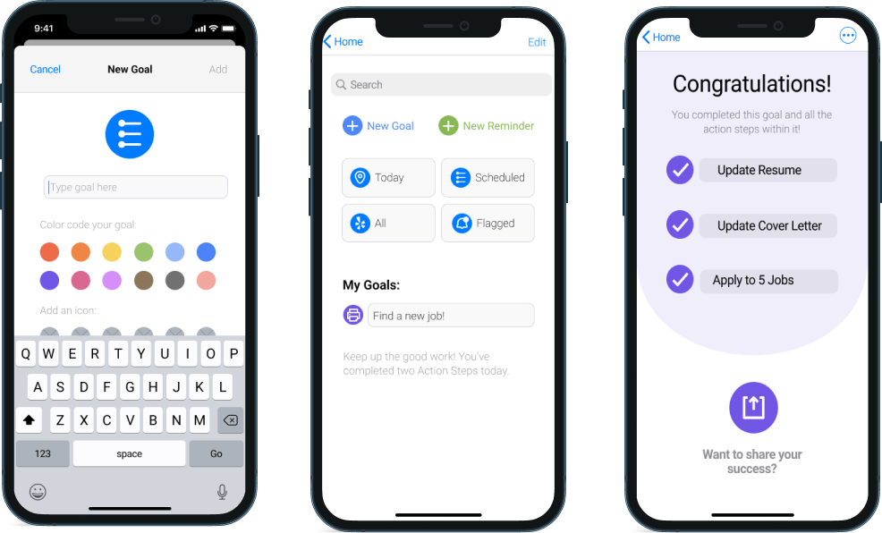

MY WORK

NON-PROFIT WEBSITE REDESIGN
A website and branding redesign for Abilis, a non-profit organization dedicated to serving people with disabilities.

GOVERNMENT AGENCY WEBSITE REDESIGN
Simplifying the Navigation Experience and Adding Responsive Web Design to FTC Website.

REMINDERS APP PROPOSAL
Updating Apple’s Reminders app to deliver a more engaging task management experience.